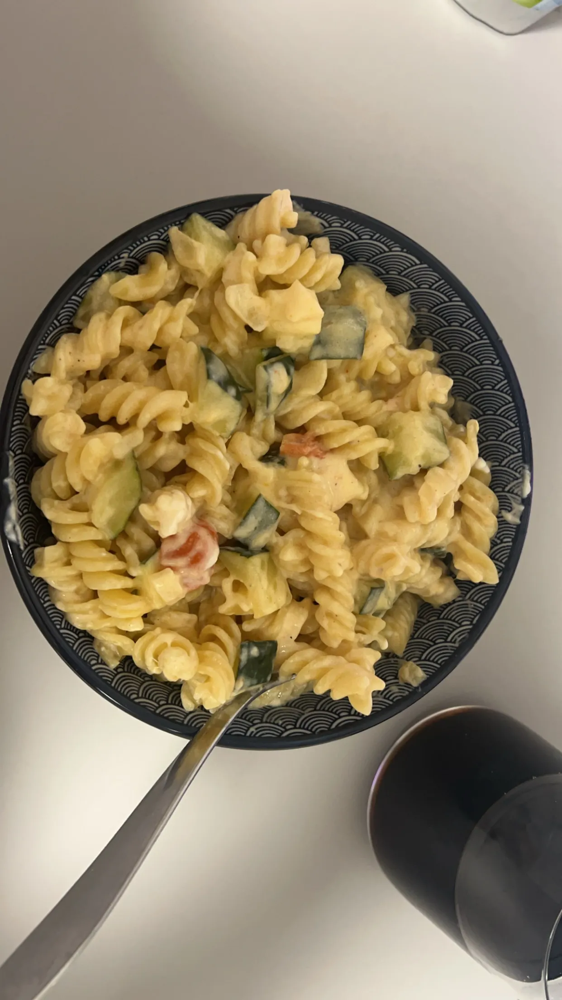

Zuccini Nudeln
Home

Ich bin selbst auf dieses Rezept gekommen und mache es gerne.
Man kann verschiedenes Gemüße nehmen und je nach Bedarf Hähnchenbrust
oder andere Proteinquellen hinzufügen.
Zutaten
- 1 Zwiebel
- 1 Knoblauchzehe
- 1 EL Öl nach Wahl
- 1/2 Zucchini
- optional: Minitomaten
- 2 EL Frischkäse
- 50 ml Milch oder Sahne
- Mozerella Käse
- 200 g Nudeln
Zubereitung
- Wasser in einem Topf erhitzen und mit einer Prise Salz zum kochen bringen. Dann Nudeln nach Packungsbeilage kochen.
- In der Zwischenzeit Zwiebel, Knoblauch und Zucchini (oder anderes Gemüse) in Würfel schneiden und Mini-Tomaten halbieren.
- In einer Pfanne das Öl erhitzen und Zwiebeln und Knoblauch anbraten. Dann die Zucchini und Mini-Tomaten mitreingeben.
- Ca 100ml Wasser in die Pfanne gießen und für 10 min kochen lassen.
- Nudeln abgießen und servieren.
- Frischkäse, Milch und Mozerella in die Soße tun und aufkochen lassen.
- Genießen :)